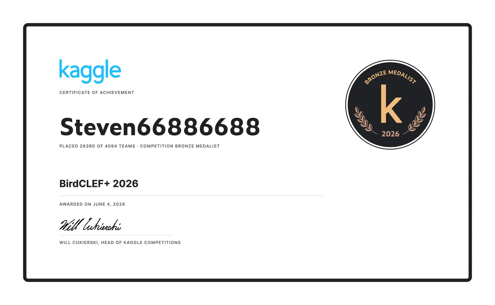
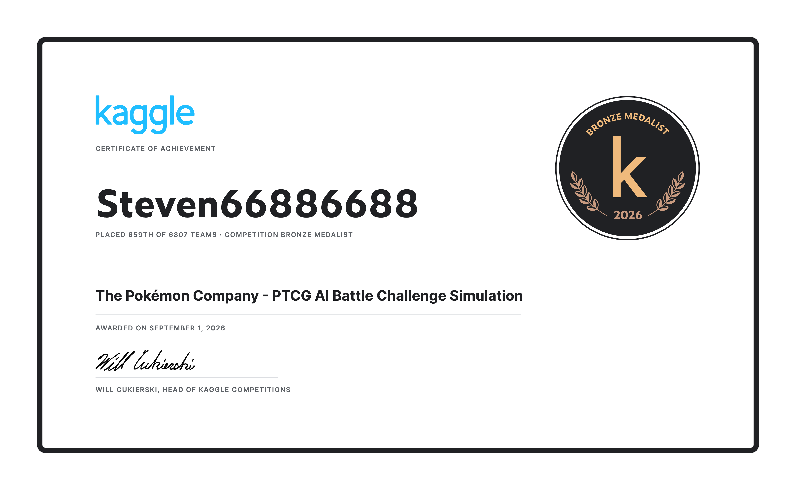
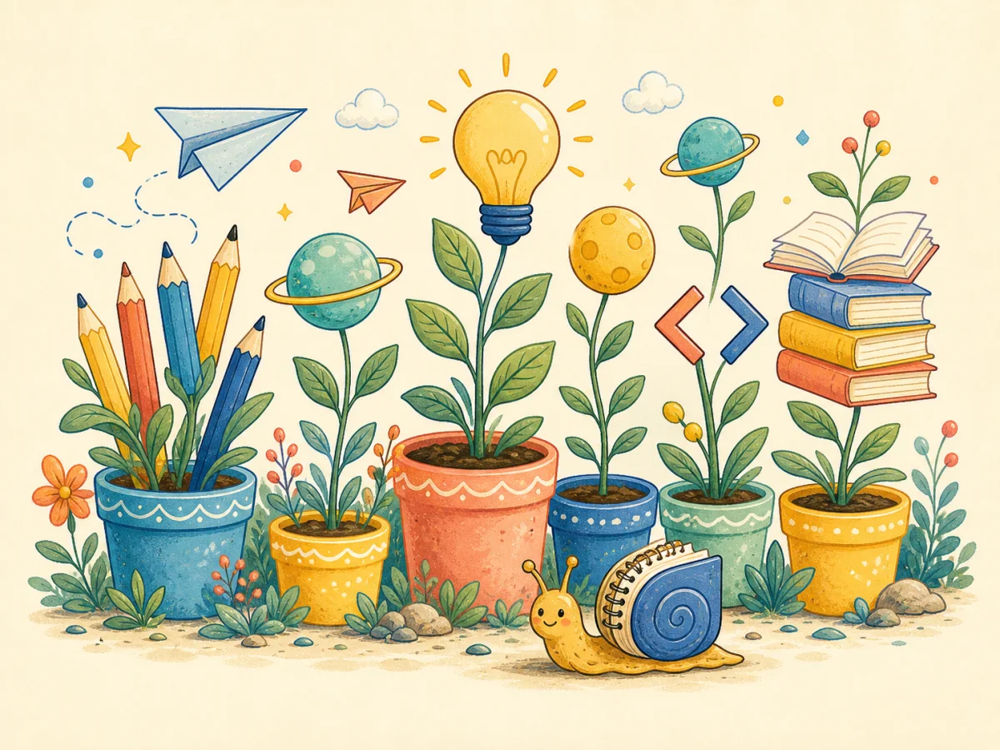

I am a third-year Computer Science undergraduate at PolyU. I work on embodied intelligence, 3D scene graphs, and multimodal systems that connect language with structured 3D environments.
659 / 6,807PTCG AI Battle Challenge, Kaggle Bronze
3.81GPA, Dean's List
Research
Current Research
I am currently studying how embodied agents can turn 3D perception into structured scene graphs and use those relations for grounded reasoning.
PolyU URIS fundedStudent PI, Sep 2025 to present
Multimodal LLM interaction for home robots
Under Prof. Wei Lou, I lead a project combining voice, gesture, and visual context. I fine-tuned Qwen2.5-VL-7B with DoRA on RefCOCO for visual grounding.
acc@0.5: 78.8% → 91.2%mIoU: 80.51.62 seconds per query
I quantified a 31-class gap in eBird output coverage and used bootstrap, permutation, and TOST tests to find no reliable gain from hard per-class selection.
SurveyLens: A discipline-aware benchmark for survey generation
I built SurveyLens-1k with 1,000 human-written surveys across 10 disciplines and designed its PDF parsing, filtering, and citation-normalization pipeline.
Dataset construction, structured representation, and dual-lens evaluation.
Under review at ACL ARRCo-author
PersonalPlan: Multi-agent planning for programming learning
I implemented the plan-to-CrewAI runtime mapper and a four-axis evaluation harness, then validated Phase 1 GRPO reward training with Qwen3-8B and LoRA.
3,043 instances gatedTier-1 reward: 0.41 → 0.90156 training steps
Supervised fine-tuning, reward-adaptive GRPO, and multi-agent execution.
Kaggle
Competition Results
Two 2026 bronze-medal finishes across bioacoustics and game simulation.
Kaggle BronzeSolo entry
BirdCLEF+ 2026
I placed 263rd of 4,094 teams in the BirdCLEF+ 2026 acoustic species identification competition.
Rank 263 of 4,094Top 6.4%

BirdCLEF+ 2026 Kaggle Bronze certificate, rank 263 of 4,094.
Kaggle BronzeTeam Steven66886688
The Pokémon Company: PTCG AI Battle Challenge Simulation
Our team placed 659th of 6,807 teams in the 2026 competition and received a Kaggle bronze medal.
Rank 659 of 6,807Top 9.7%Awarded September 2026

Kaggle bronze medal certificate for the PTCG AI Battle Challenge Simulation.
About
What I am working on now
I am a third-year Computer Science undergraduate at The Hong Kong Polytechnic University.
My current research is centered on embodied intelligence and 3D scene graphs. I am interested in how agents can organize objects, relations, and language into a useful model of a 3D environment.
Alongside research, I maintain several learning and research tools. Their live links are collected at home.shc66.com.
The Hong Kong Polytechnic UniversityB.Sc. in Computer Science, 2024 to 2028, GPA 3.81, Dean's List

Skills
Technical Skills
LanguagesPython, TypeScript, Java, C++, Go, SQL
AI and MLPyTorch, Hugging Face, Qwen-VL, Qwen3, LoRA, DoRA, GRPO, CrewAI